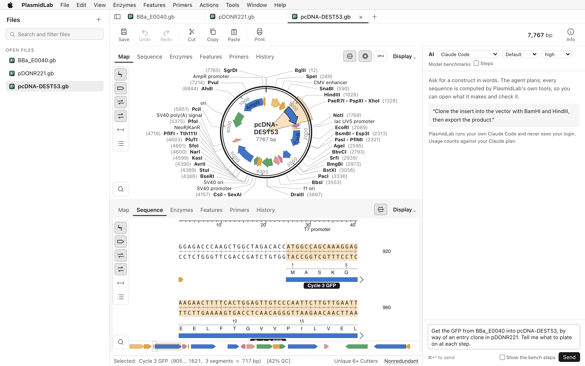
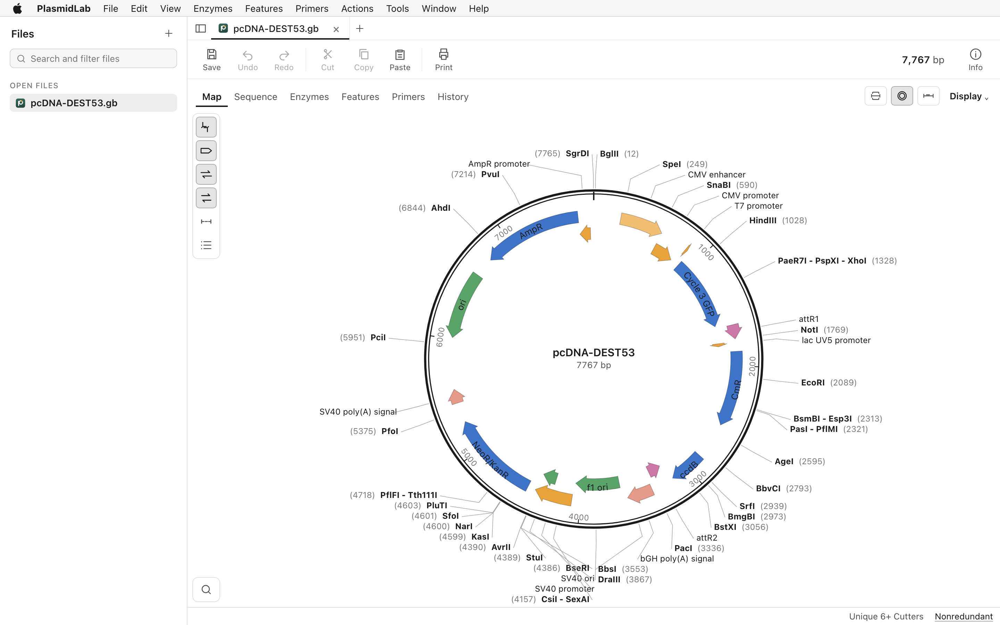
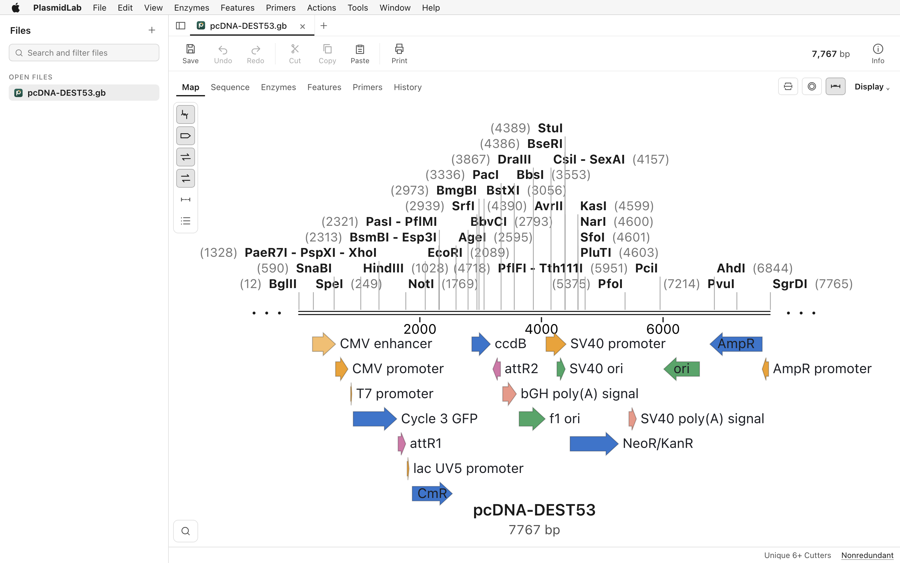
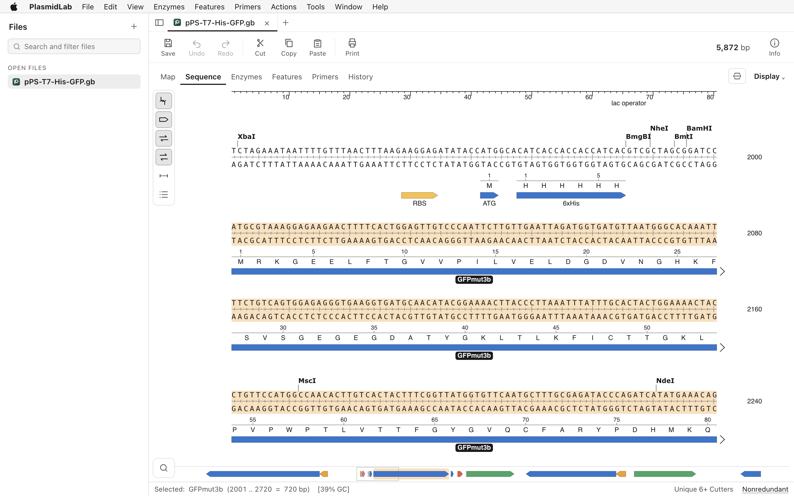
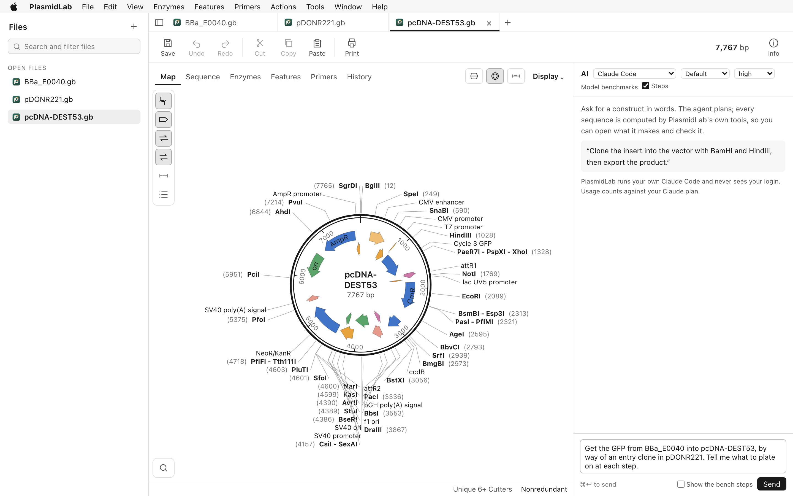
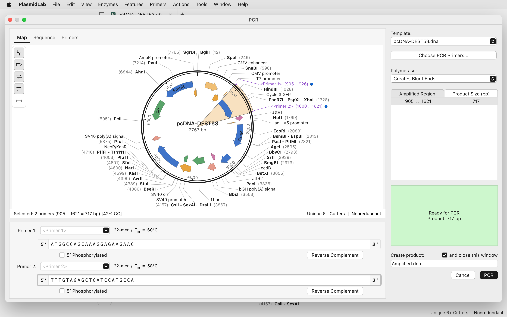
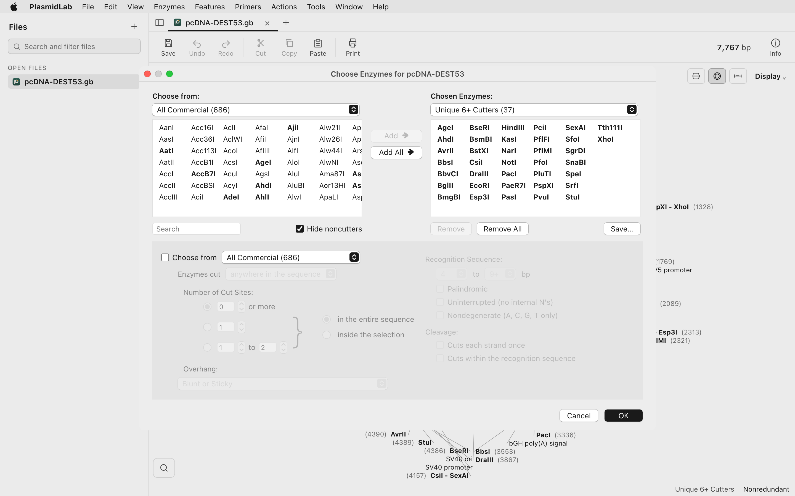
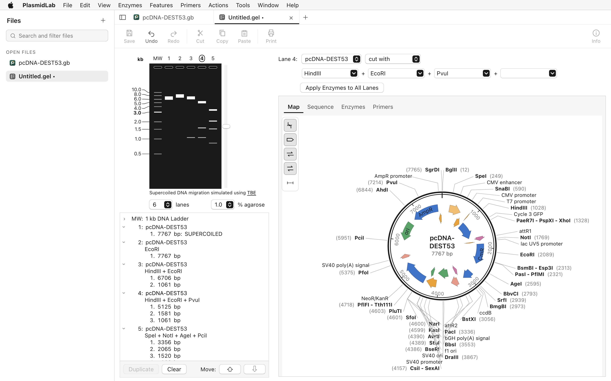

Design the clone before you pick up a pipette.
PlasmidLab is a plasmid map and sequence editor for your desktop. Describe the construct you want. The agent works out the cloning on your own sequences, then draws the bench steps so you can check them before you start.
Also for Windows. Intel and Apple silicon.
Opens .dna files, GenBank and FASTA. No account needed.

A plasmid editor that works like a normal program.
Open a file, or drop one on the window. Maps, sequence, enzymes, primers and gels are all there, and the agent uses the same tools you do.
- Maps
- Circular and linear, with your features drawn on them.
- Sequence
- Translations and features alongside the bases.
- Enzymes
- Restriction enzymes and enzyme sets.
- Primers and PCR
- A primer database and PCR on any region.
- Gels, alignments, traces
- Simulated gels, alignments, and sequencing traces from .ab1 and .scf files.
- Also in the box
- Codon usage tables, a CRISPR guide window, feature detection and secondary structure.
- Files
- Reads and writes .dna, GenBank and FASTA.



Every digest, PCR and assembly is run on your actual sequences, then drawn step by step before you touch a tube.
Say what you want built. Watch how it gets built.
The agent is not writing a generic protocol. It designs the cloning with the app's own tools, on the plasmids you have open.
- 1
Describe the construct
Type it in the panel in your own words: move this gene into that vector, take out these codons, put four genes in one frame.
- 2
It designs the cloning
It runs real digests, PCRs and assemblies on your sequences, then writes the plan in the chat.
- 3
You watch the bench
It draws an animated walkthrough of that design: digest, fragments, assembly, product, with the real enzyme names, sizes and overhangs. It plays inside the app.

The agent works with the Claude Code, Codex or Grok CLIs you already have, or with an API key of your own. The editor and every cloning tool work without any of them.
The usual ways of joining DNA, already in the menu.
Each one is a tool you can run by hand. The agent picks from the same set.
- Restriction cut and paste
- Digest both plasmids, choose the fragments, ligate.
- Gibson and seamless assembly
- Join two pieces by homology, with no scar left behind.
- Golden Gate
- Assemble a part into an acceptor in one pass.
- Gateway BP and LR
- Make an entry clone, then an expression clone.
- TA and TOPO cloning
- Clone a PCR product straight into the vector.
- Inverse PCR and overlap PCR
- Amplify around a plasmid, or stitch pieces through overlapping ends.
- Q5 site directed mutagenesis
- Change bases in place.
- Silent mutations
- Remove a site without changing an amino acid.
- Ligating and inserting
- Ligate fragments, or insert a fragment or a feature at the position you choose.



Six cloning problems, ready to open.
Choose Help > Try a Cloning Design. Each one opens its own sequences and puts the brief in the panel. Work it out yourself, or send it to the agent.
Move an insert between plasmids
“Move the GFP from the pUC19 plasmid into the expression vector.”
Join two pieces with no scar
“Get the GFP from the template into the vector, right behind the CMV promoter, without leaving a scar.”
Put a synthesised part into an acceptor
“Clone the GFPmut3b part into pPS-GG1 and give me the finished plasmid.”
Take 40 codons out of the middle of a gene
“Delete codons 97 to 136 of the GFP in pPS-T7-His-GFP, in frame and without leaving a scar.”
Make an entry clone, then an expression clone
“Get the GFP from BBa_E0040 into pcDNA-DEST53, by way of an entry clone in pDONR221. Tell me what to plate on at each step.”
Put four genes in one reading frame
“Put GFP, mCherry, PuroR and HygR behind the CMV promoter as one reading frame, with the 2A linkers between them so all four are made from one transcript.”
Install it like any other program.
- Open the .dmg you downloaded.
- Drag PlasmidLab to Applications.
- Start it. The app is signed and notarized by Apple.
- Run the installer you downloaded.
- Follow the prompts.
- Start PlasmidLab from the Start menu.
After install, trace files, .dna, GenBank and FASTA files open with a double click.
Questions people ask first.
Do I need an internet connection?
No. The editor and every cloning tool work offline. The internet is used by the AI agent, and for NCBI and UniProt imports.
Which AI do I need?
None, to use the editor. For the agent, use the Claude Code, Codex or Grok CLI you already have, or an API key of your own.
Can I open my existing .dna files?
Yes. PlasmidLab reads and writes .dna files, GenBank and FASTA. Choose File > Open, or drop a file on the window.
Intel or Apple silicon?
Both. One Mac download runs on either.
Does the agent send my sequences anywhere?
Only to the AI provider you chose, and only when you ask it something.
Do I need a GitHub account to download?
No. The download button gives you the installer directly.
Where do I send a bug?
Email hello@plasmidlab.com, or use Report a problem or suggest a feature.
Tell us what broke, or what is missing.
Open your own plasmid and plan the next clone.
Also for Windows.